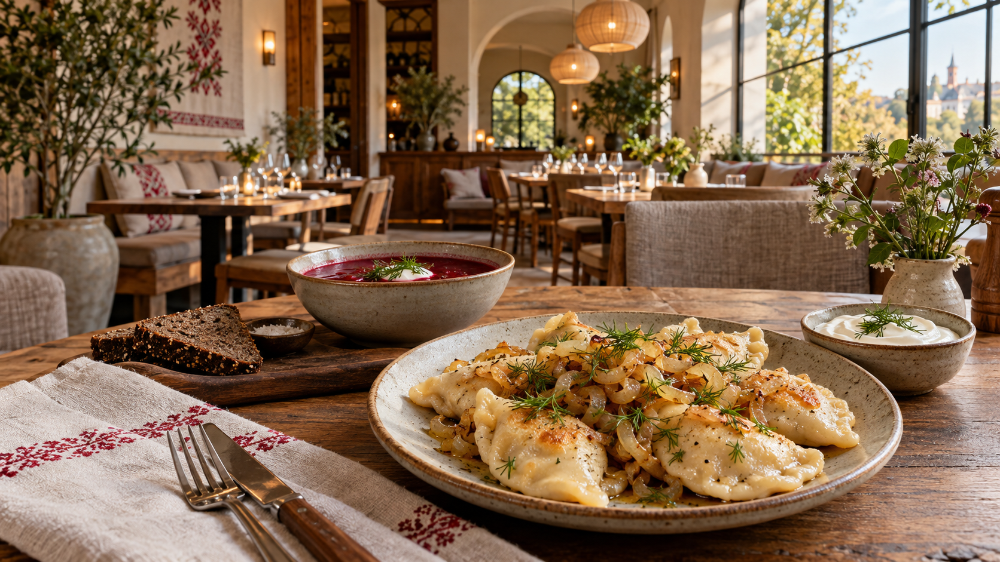

TRADITIONELLE REZEPTE
Authentische Gerichte, zubereitet nach bewährten Familienrezepten mit einem modernen kulinarischen Akzent.
Bei Datscha bringen wir die Vielfalt der slawischen Küche auf den Tisch. Von herzhaften Suppen über gefüllte Teigtaschen bis hin zu süßen Blini servieren wir Gerichte, die nach Zuhause schmecken.

Authentische Gerichte, zubereitet nach bewährten Familienrezepten mit einem modernen kulinarischen Akzent.
Sorgfältig ausgewählte Produkte aus der Region für höchste Qualität und unverwechselbaren Geschmack.
Ein Ort zum Wohlfühlen, an dem Familie und Freunde gemeinsam besondere Momente genießen können.